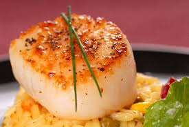

Pan seared scallops with saffron rice
Saffron rice and sauteed mushrooms over scallops in a creamy sauce - a fantastic addition to any meal
All the ingrediants delivered to your door by Amazon.com
Saffron rice and sauteed mushrooms over scallops in a creamy sauce - a fantastic addition to any meal